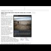

<!DOCTYPE html>
<html lang="en">
 <head>
<!-- Favicon -->
<link rel="shortcut icon" href="../../favicon.ico">
  <meta charset="utf-8"/>
  <title>
   An adviser to former president Bill Clinton intervened in 2005 to help win Kazakh approval of a uranium mining deal benefiting a major donor to the Clinton Foundation
  </title>
  <meta content="Post on /v/Conspiracy from 2017-11-15 by GizaDog." name="description"/>
  <meta content="An adviser to former president Bill Clinton intervened in 2005 to help win Kazakh approval of a uranium mining deal benefiting a major donor to the Clinton Foundation" property="og:title"/>
  <meta content="Post on /v/Conspiracy from 2017-11-15 by GizaDog." property="og:description"/>
  <link href="../../static/css/page.css" rel="stylesheet"/>
  <meta content="https://voat.conspiracy.hackliberty.org/thumbnails/95/50/955073b1-d49d-4c83-a2a3-01da677b386d.jpg" property="og:image"/>
  <meta content="https://voat.conspiracy.hackliberty.org/v/conspiracy/2243891.html" property="og:url"/>
  <meta content="width=device-width, initial-scale=1" name="viewport"/>
  <link href="https://voat.conspiracy.hackliberty.org/v/conspiracy/2243891.html" rel="canonical"/>
  <meta content="article" property="og:type"/>
  <meta content="Voat /v/Conspiracy Archive" property="og:site_name"/>
  <meta content="en_US" property="og:locale"/>
  <meta content="summary_large_image" name="twitter:card"/>
  <meta content="An adviser to former president Bill Clinton intervened in 2005 to help win Kazakh approval of a uranium mining deal benefiting a major donor to the Clinton Foundation" name="twitter:title"/>
  <meta content="Post on /v/Conspiracy from 2017-11-15 by GizaDog." name="twitter:description"/>
  <meta content="https://voat.conspiracy.hackliberty.org/thumbnails/95/50/955073b1-d49d-4c83-a2a3-01da677b386d.jpg" name="twitter:image"/>
 </head>
</html>
<body class="dark">
 <div id="container">
  <!-- array (
  'submissionid' => 2243891,
  'creationDate' => '2017-11-15 18:35:49',
  'domain' => 'washingtonpost.com',
  'formattedContent' => NULL,
  'isAdult' => 0,
  'isAnonymized' => 0,
  'subverse' => 'Conspiracy',
  'thumbnail' => '955073b1-d49d-4c83-a2a3-01da677b386d.jpg',
  'title' => 'An adviser to former president Bill Clinton intervened in 2005 to help win Kazakh approval of a uranium mining deal benefiting a major donor to the Clinton Foundation',
  'url' => 'http://www.washingtonpost.com/wp-dyn/content/article/2010/02/24/AR2010022403290.html',
  'userName' => 'GizaDog',
  'archivedLink' => 'http://archive.is/U7w3G',
  'archivedDomain' => 'archive.is',
  'isDeleted' => 0,
) -->
  
<header>
  <nav class="navbar navbar-dark bg-primary">
    <a class="navbar-brand" href="../../index.html">v/Conspiracy Archive</a>
    <div class="navbar-collapse">
      <ul class="navbar-nav">
        <li class="nav-item">
          <a class="nav-link" href="../../date/page-1.html">Date</a>
        </li>
        <li class="nav-item">
          <a class="nav-link" href="../../comments/page-1.html">Comments</a>
        </li>
        <li class="nav-item">
          <a class="nav-link" href="../../search.html">Search</a>
        </li>
        <li class="nav-item dropdown">
          <a class="nav-link dropdown-toggle" href="#" id="navbarDropdown" role="button" 
             data-toggle="dropdown" aria-haspopup="true" aria-expanded="false">
            subreddits
          </a>
          <div class="dropdown-menu" aria-labelledby="navbarDropdown">
            <a class="dropdown-item" href="https://reddit.conspiracy.hackliberty.org">r/conspiracy</a>
            <a class="dropdown-item" href="https://reddit.pizzagate.hackliberty.org">r/pizzagate</a>
            <a class="dropdown-item" href="https://voat.conspiracy.hackliberty.org">v/conspiracy</a>
            <a class="dropdown-item" href="https://voat.pizzagate.hackliberty.org">v/pizzagate</a>
          </div>
        </li>
      </ul>
    </div>
  </nav>
</header>

  <div class="content" role="main">
   <div class="sitetable linklisting" id="siteTable">
    <div class="submission id-2243891 link type-text" id="submission-2243891">
     <a name="submissionTop">
     </a>
     <p class="parent">
     </p>
     <a class="thumbnail may-blank" href="http://archive.is/U7w3G" target="_self">
      
     </a>
     <div class="entry unvoted">
      <p class="title">
       <a class="title may-blank" href="http://archive.is/U7w3G" tabindex="1" target="_self" title="An adviser to former president Bill Clinton intervened in 2005 to help win Kazakh approval of a uranium mining deal benefiting a major donor to the Clinton Foundation">
        An adviser to former president Bill Clinton intervened in 2005 to help win Kazakh approval of a uranium mining deal benefiting a major donor to the Clinton Foundation
       </a>
       <span class="domain">
        (
        <a href="https://archive.searchvoat.co/search.php?d=washingtonpost.com">
         washingtonpost.com
        </a>
        )
       </span>
      </p>
      <p class="tagline">
       submitted
       <time datetime="2017-11-15T18:35:49+00:00" title="11/15/2017 6:35:49 PM">
        2017-11-15T18:35
       </time>
       by
       <span class="userattrs">
        <a class="author may-blank" href="https://archive.searchvoat.co/search.php?u=GizaDog">
         GizaDog
        </a>
       </span>
      </p>
      <ul class="flat-list buttons">
       <li class="first">
        <a class="comments may-blank" href="https://archive.searchvoat.co/v/Conspiracy/2243891" rel="nofollow">
         No comments
        </a>
       </li>
      </ul>
     </div>
     <div class="child">
     </div>
     <div class="clearleft">
     </div>
    </div>
    <div class="clearleft">
    </div>
   </div>
   <div class="horizontal-line">
   </div>
   <div class="commentarea">
    <div class="sitetable nestedlisting" id="siteTable">
    </div>
   </div>
  </div>
 </div>
<!-- Footer Section -->
<footer class="container-fluid mt-3">
  <p class="small mb-0">
    /v/conspiracy archive has 42504 posts and 159856 total comments.
    <a href="https://git.hackliberty.org/c0mmando/voat-conspiracy-archive/">source code</a>.
  </p>
</footer>

<script src="../../static/js/jquery-3.7.1.slim.min.js"></script>
<script src="../../static/js/comments-toggle.js"></script>

</body>
